Phó Bí thư Tỉnh ủy
Chủ tịch HĐND tỉnh Thái Nguyên
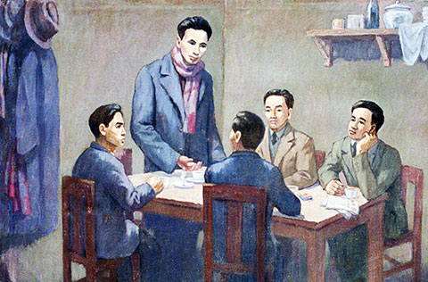
Đại hội lần thứ nhất của Đảng có ý nghĩa lịch sử quan trọng, đánh dấu sự khôi phục được hệ thống tổ chức của Đảng từ Trung ương đến địa phương, từ trong nước ra ngoài nước.
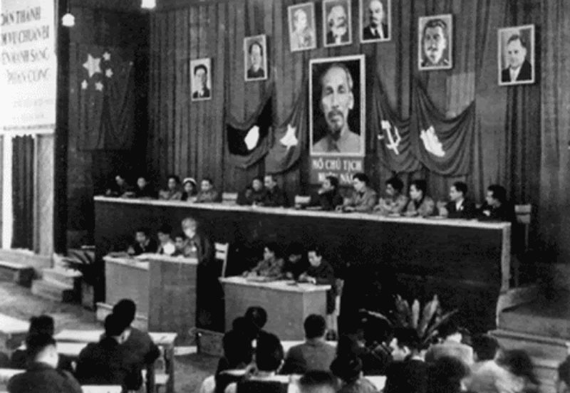
Từ năm 1950, phong trào cách mạng trên thế giới phát triển mạnh mẽ. Hệ thống xã hội chủ nghĩa đã được củng cố và tăng cường về mọi mặt. Phong trào giải phóng dân tộc vẫn tiếp tục phát triển làm rung chuyển hậu phương của chủ nghĩa đế quốc. Phong trào bảo vệ hoà bình thế giới trở thành phong trào quần chúng rộng rãi.

Trong tổng số các đại biểu tham dự Đại hội có 50% số đại biểu là các đảng viên đã tham gia cách mạng từ khi Đảng còn hoạt động bí mật, tất cả các đại biểu đã trải qua cuộc kháng chiến chống Pháp xâm lược.
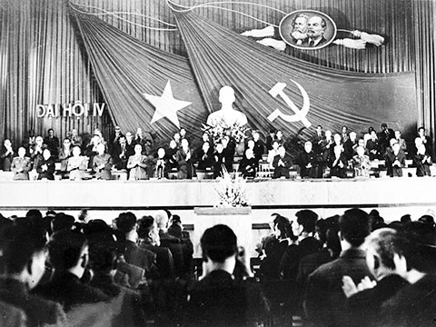
Đảng Cộng sản Việt Nam đã tiến hành Đại hội đại biểu toàn quốc lần thứ IV tại Thủ đô Hà Nội từ ngày 14 đến ngày 20/12/1976.
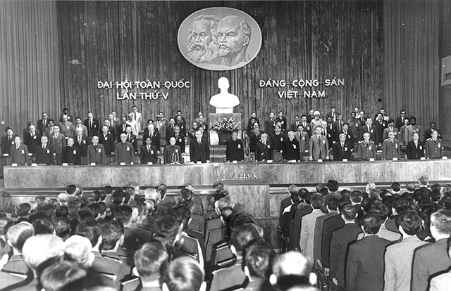
Đại hội đại biểu toàn quốc lần thứ V của Đảng, họp từ ngày 27 đến ngày 31 tháng 3 năm 1982 tại Thủ đô Hà Nội.

Đại hội đại biểu toàn quốc lần thứ VI của Đảng họp tại Hà Nội từ ngày 15 đến 18-12-1986.
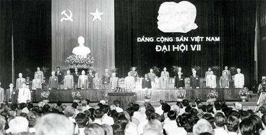
Đại hội đại biểu toàn quốc lần thứ VII của Đảng Cộng sản Việt Nam họp tại Thủ đô Hà Nội từ ngày 24 đến ngày 27/6/1991.
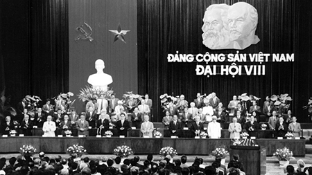
Đại hội đại biểu toàn quốc lần thứ VIII Đảng Cộng sản Việt Nam diễn ra từ ngày 28-6 đến 1-7-1996, tại Hội trường Ba Đình, Hà Nội.
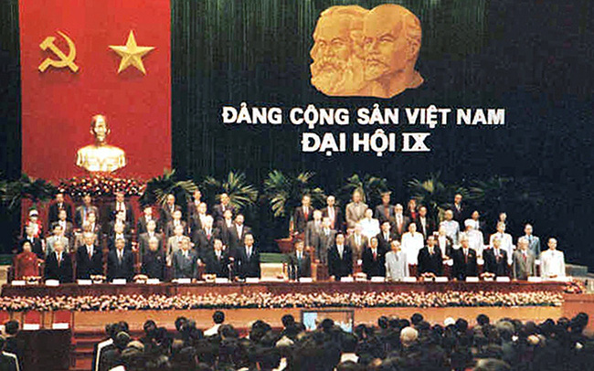
Đại hội đại biểu toàn quốc lần thứ IX của Đảng họp tại Hà Nội từ ngày 19 đến 22 tháng 4 năm 2001, với sự tham gia của 1.168 đại biểu.
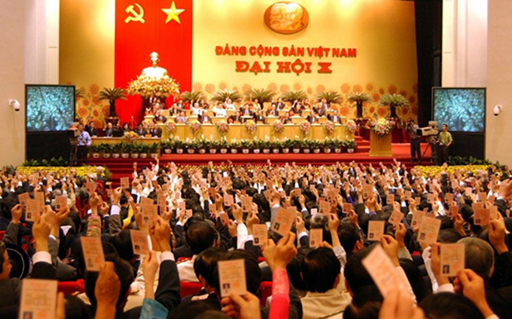
Đại hội đại biểu toàn quốc lần thứ X của Đảng đã bầu ra Ban Chấp hành Trung ương Đảng khoá X gồm 160 Uỷ viên chính thức và 21 Uỷ viên dự khuyết.
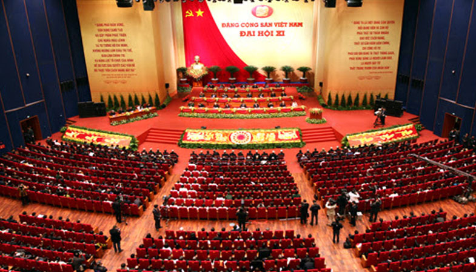
Đại hội đại biểu toàn quốc lần thứ XI Đảng có tổng số đại biểu tham dự là 1377 đại biểu.
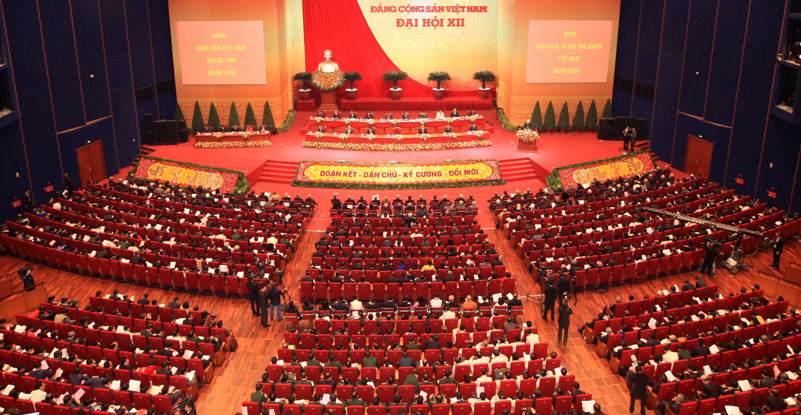
Số lượng đại biểu dự Đại hội lần thứ XII tăng 133 đại biểu so với Đại hội XI.
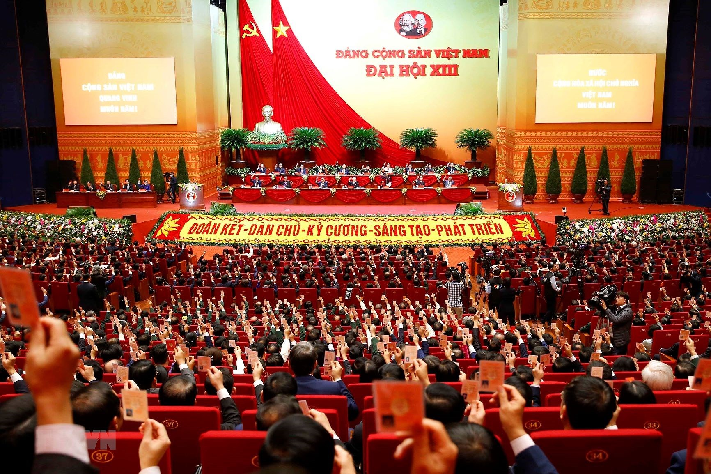
Đại hội đại biểu toàn quốc lần thứ XIII của Đảng họp tại Thủ đô Hà Nội.
Tổng Bí thư
Đồng chí Trần Phú
Tổng Bí thư
Đồng chí Lê Hồng Phong
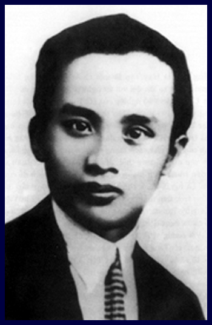
Tổng Bí thư
Đồng chí Hà Huy Tập
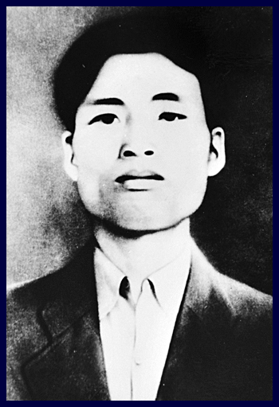
Tổng Bí thư
Đồng chí Nguyễn Văn Cừ
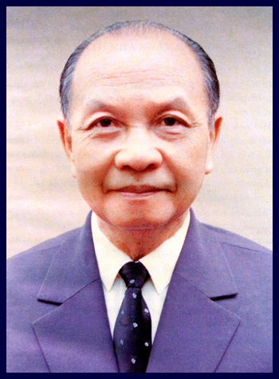
Tổng Bí thư
Đồng chí Trường Chinh
Tổng Bí thư
Đồng chí Lê Duẩn
Tổng Bí thư
Đồng chí Nguyễn Văn Linh
Tổng Bí thư
Đồng chí Đỗ Mười
Tổng Bí thư
Đồng chí Lê Khả Phiêu
Tổng Bí thư
Đồng chí Nông Đức Mạnh
Tổng Bí thư
Đồng chí Nguyễn Phú Trọng
Tổng Bí thư
Đồng chí Tô Lâm